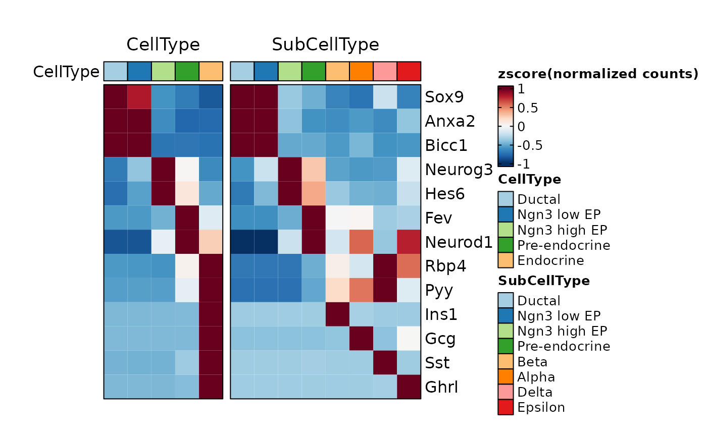
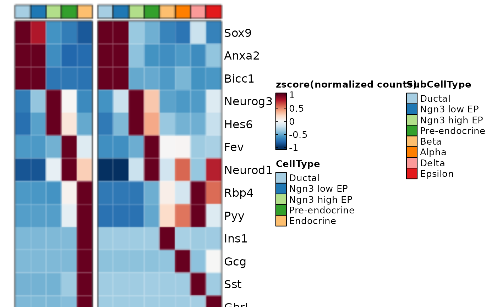
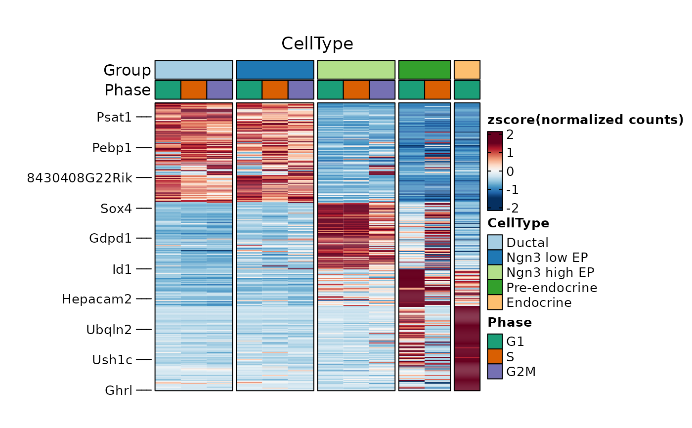
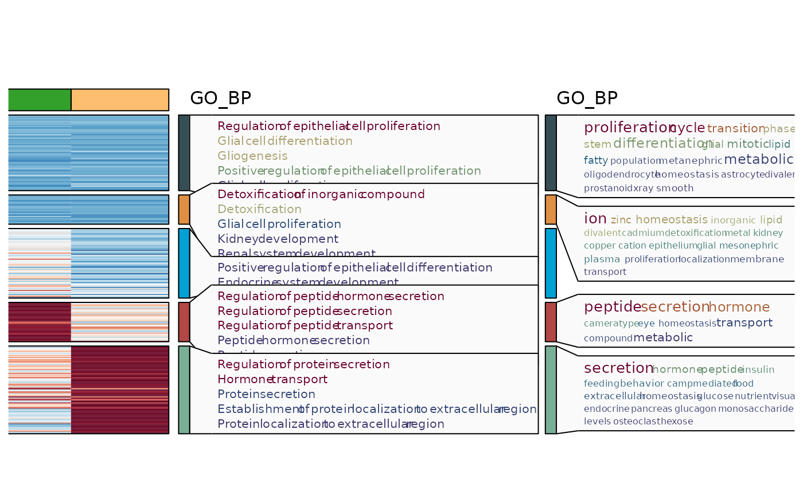
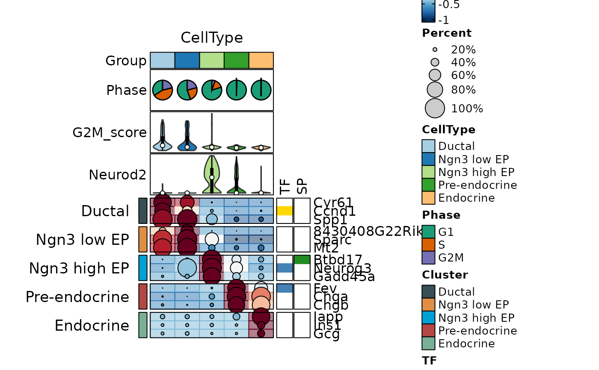
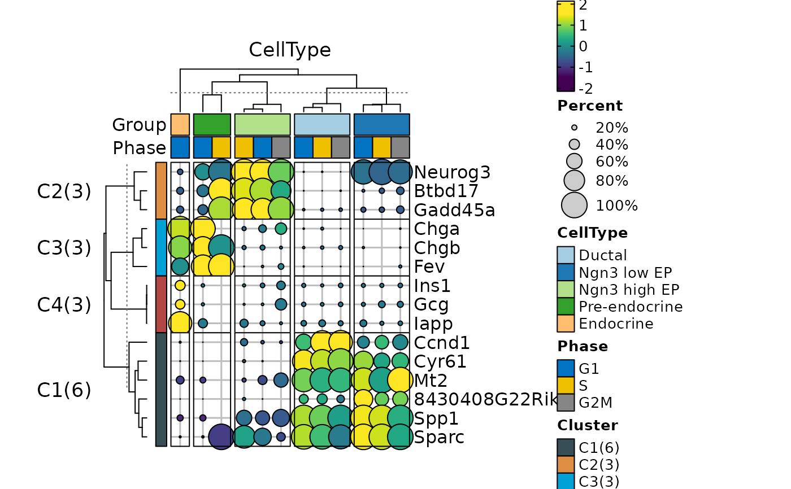
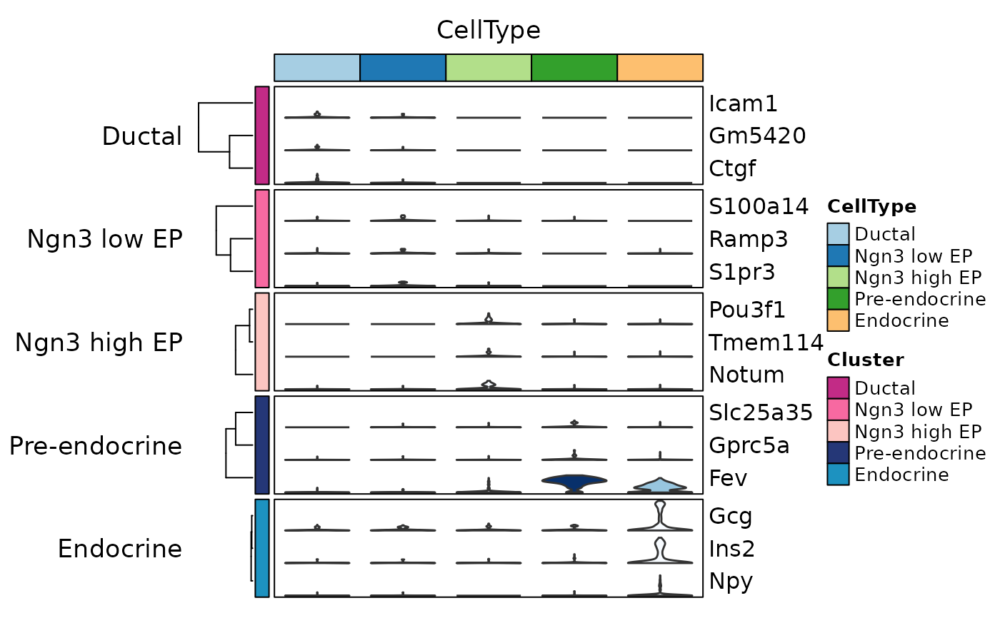
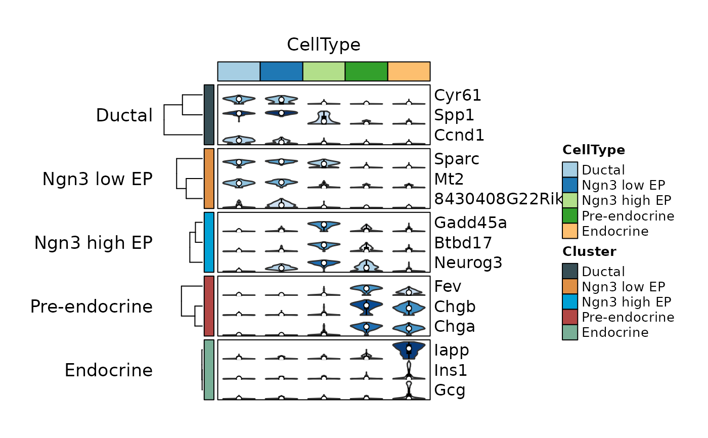

GroupHeatmap
Usage
GroupHeatmap(
srt,
features = NULL,
group.by = NULL,
split.by = NULL,
grouping.var = NULL,
numerator = NULL,
cells = NULL,
aggregate_fun = base::mean,
exp_cutoff = 0,
border = TRUE,
flip = FALSE,
slot = "counts",
assay = "RNA",
exp_method = c("zscore", "raw", "fc", "log2fc", "log1p"),
limits = NULL,
lib_normalize = identical(slot, "counts"),
libsize = NULL,
feature_split = NULL,
feature_split_by = NULL,
n_split = NULL,
split_method = c("kmeans", "hclust", "mfuzz"),
decreasing = FALSE,
cluster_features_by = NULL,
cluster_rows = FALSE,
cluster_columns = FALSE,
cluster_row_slices = FALSE,
cluster_column_slices = FALSE,
show_row_names = FALSE,
show_column_names = FALSE,
row_names_side = ifelse(flip, "left", "right"),
column_names_side = ifelse(flip, "bottom", "top"),
row_names_rot = 0,
column_names_rot = 90,
row_title_side = "left",
column_title_side = "top",
row_title_rot = 0,
column_title_rot = ifelse(flip, 90, 0),
anno_terms = FALSE,
anno_keys = FALSE,
anno_features = FALSE,
terms_width = unit(4, "in"),
terms_fontsize = 8,
keys_width = unit(2, "in"),
keys_fontsize = c(6, 10),
features_width = unit(2, "in"),
features_fontsize = c(6, 10),
IDtype = "symbol",
species = "Homo_sapiens",
db_update = FALSE,
db_version = "latest",
convert_species = FALSE,
Ensembl_version = 103,
mirror = NULL,
db = "GO_BP",
TERM2GENE = NULL,
TERM2NAME = NULL,
minGSSize = 10,
maxGSSize = 500,
universe = NULL,
GO_simplify = FALSE,
GO_simplify_padjustCutoff = 0.2,
simplify_method = "Rel",
simplify_similarityCutoff = 0.7,
pvalueCutoff = NULL,
padjustCutoff = 0.05,
topTerm = 5,
show_termid = FALSE,
topWord = 20,
min_word_length = 3,
exclude_words = c("cell", "cellular", "dna", "rna", "protein", "development",
"organization", "system", "regulation", "positive", "negative", "response",
"process"),
nlabel = 0,
features_label = NULL,
label_size = 10,
label_color = "black",
add_bg = FALSE,
bg_alpha = 0.5,
add_dot = FALSE,
dot_size = unit(8, "mm"),
add_reticle = FALSE,
reticle_color = "grey",
add_violin = FALSE,
fill.by = "feature",
fill_palette = "Dark2",
fill_palcolor = NULL,
heatmap_palette = "RdBu",
heatmap_palcolor = NULL,
group_palette = "Paired",
group_palcolor = NULL,
cell_split_palette = "jama",
cell_split_palcolor = NULL,
feature_split_palette = "jama",
feature_split_palcolor = NULL,
cell_annotation = NULL,
cell_palette = "Paired",
cell_palcolor = NULL,
cell_annotation_params = if (flip) list(width = grid::unit(1, "cm")) else list(height =
grid::unit(1, "cm")),
feature_annotation = NULL,
feature_palette = "Dark2",
feature_palcolor = NULL,
feature_annotation_params = list(),
use_raster = NULL,
raster_device = "png",
raster_by_magick = FALSE,
height = NULL,
width = NULL,
units = "inch",
seed = 11,
ht_params = list()
)Arguments
- srt
A
Seuratobject.- features
A vector of gene names to plot.
- group.by
Columns used to calculate cell expression. One heatmap per column name.
- assay
Assay used to calculate the expression.
- exp_method
Method used to calculate cell expression.
- feature_split
A vector of group names for features.
- heatmap_palette
Heatmap expression palette.
- cell_palette
Column palette.
- feature_palette
Feature groups palette.
- raster_by_magick
Examples
library(dplyr)
data("pancreas_sub")
ht1 <- GroupHeatmap(pancreas_sub,
features = c(
"Sox9", "Anxa2", "Bicc1", # Ductal
"Neurog3", "Hes6", # EPs
"Fev", "Neurod1", # Pre-endocrine
"Rbp4", "Pyy", # Endocrine
"Ins1", "Gcg", "Sst", "Ghrl" # Beta, Alpha, Delta, Epsilon
),
group.by = c("CellType", "SubCellType"),
show_row_names = TRUE
)
#> 'magick' package is suggested to install to give better rasterization.
#>
#> Set `ht_opt$message = FALSE` to turn off this message.
ht1$plot

panel_fix(ht1$plot, height = 5, width = 10, raster = TRUE, dpi = 50)
#> panel 6 is detected as generated by plot_grid.

pancreas_sub <- RunDEtest(pancreas_sub, group_by = "CellType")
#> Warning: Data in the 'data' slot is raw counts. Perform NormalizeData(LogNormalize) on the data.
#> [2023-02-16 00:02:20] Start DEtest
#> Threads used: 1
#> Find all markers(wilcox) among groups...
#>
|
| | 0%
|
|==============================================================================================================| 100%
#>
#> [2023-02-16 00:02:24] DEtest done
#> Elapsed time:4.97 secs
de_filter <- filter(pancreas_sub@tools$DEtest_CellType$AllMarkers_wilcox, p_val_adj < 0.05 & avg_log2FC > 1)
ht2 <- GroupHeatmap(
srt = pancreas_sub, features = de_filter$gene, group.by = "CellType",
split.by = "Phase", cell_split_palette = "Dark2",
nlabel = 10, show_row_names = FALSE
)
#> 'magick' package is suggested to install to give better rasterization.
#>
#> Set `ht_opt$message = FALSE` to turn off this message.
ht2$plot

ht3 <- GroupHeatmap(
srt = pancreas_sub, features = de_filter$gene, feature_split = de_filter$group1, group.by = "CellType",
nlabel = 20, show_row_names = FALSE,
species = "Mus_musculus", db = "GO_BP", anno_terms = TRUE, anno_keys = TRUE, anno_features = TRUE
)
#> 'magick' package is suggested to install to give better rasterization.
#>
#> Set `ht_opt$message = FALSE` to turn off this message.
#> [2023-02-16 00:02:29] Start Enrichment
#> Threads used: 1
#> Species: Mus_musculus
#> Loaded cached db: GO_BP version:3.16.0 nterm:15992 created:2023-02-15 23:48:26
#> Convert ID types for the database: GO_BP
#> Connect to the Ensembl archives...
#> Using the 103 version of biomart...
#> Connect to the biomart...
#> Error in curl::curl_fetch_memory(url, handle = handle): Timeout was reached: [feb2021.archive.ensembl.org:443] Operation timed out after 10001 milliseconds with 0 bytes received
ht3$plot
#> Error in eval(expr, envir, enclos): object 'ht3' not found
pancreas_sub <- AnnotateFeatures(pancreas_sub, species = "Mus_musculus", db = c("TF", "SP"))
#> Species: Mus_musculus
#> Loaded cached db: TF version:AnimalTFDB4 nterm:2 created:2023-02-15 23:38:02
#> Loaded cached db: SP version:cspa nterm:1 created:2023-02-15 23:38:06
de_top <- de_filter %>%
group_by(gene) %>%
top_n(1, avg_log2FC) %>%
group_by(group1) %>%
top_n(3, avg_log2FC)
ht4 <- GroupHeatmap(pancreas_sub,
features = de_top$gene, feature_split = de_top$group1, group.by = "CellType",
heatmap_palette = "YlOrRd",
cell_annotation = c("Phase", "G2M_score", "Neurod2"), cell_palette = c("Dark2", "Paired", "Paired"),
cell_annotation_params = list(height = grid::unit(0.5, "in")),
feature_annotation = c("TF", "SP"),
feature_palcolor = list(c("gold", "steelblue"), c("forestgreen")),
add_dot = TRUE, add_bg = TRUE, show_row_names = TRUE
)
#> 'magick' package is suggested to install to give better rasterization.
#>
#> Set `ht_opt$message = FALSE` to turn off this message.
ht4$plot

ht5 <- GroupHeatmap(pancreas_sub,
features = de_top$gene, feature_split = de_top$group1, group.by = "CellType",
heatmap_palette = "YlOrRd",
cell_annotation = c("Phase", "G2M_score", "Neurod2"), cell_palette = c("Dark2", "Paired", "Paired"),
cell_annotation_params = list(width = grid::unit(0.5, "in")),
feature_annotation = c("TF", "SP"),
feature_palcolor = list(c("gold", "steelblue"), c("forestgreen")),
add_dot = TRUE, add_bg = TRUE,
flip = TRUE, column_title_rot = 45, show_column_names = TRUE
)
#> 'magick' package is suggested to install to give better rasterization.
#>
#> Set `ht_opt$message = FALSE` to turn off this message.
ht5$plot

ht6 <- GroupHeatmap(pancreas_sub,
features = de_top$gene, feature_split = de_top$group1, group.by = "CellType",
add_violin = TRUE, cluster_rows = TRUE,
show_row_names = TRUE
)
#> 'magick' package is suggested to install to give better rasterization.
#>
#> Set `ht_opt$message = FALSE` to turn off this message.
ht6$plot

ht7 <- GroupHeatmap(pancreas_sub,
features = de_top$gene, feature_split = de_top$group1, group.by = "CellType",
add_violin = TRUE, fill.by = "expression", fill_palette = "Blues", cluster_rows = TRUE,
show_row_names = TRUE
)
#> 'magick' package is suggested to install to give better rasterization.
#>
#> Set `ht_opt$message = FALSE` to turn off this message.
ht7$plot

ht8 <- GroupHeatmap(pancreas_sub,
features = de_top$gene, group.by = "CellType", split.by = "Phase", n_split = 4,
cluster_rows = TRUE, cluster_columns = TRUE, cluster_row_slices = TRUE, cluster_column_slices = TRUE,
add_dot = TRUE, add_reticle = TRUE, heatmap_palette = "viridis",
ht_params = list(row_gap = grid::unit(0, "mm"))
)
#> 'magick' package is suggested to install to give better rasterization.
#>
#> Set `ht_opt$message = FALSE` to turn off this message.
ht8$plot
